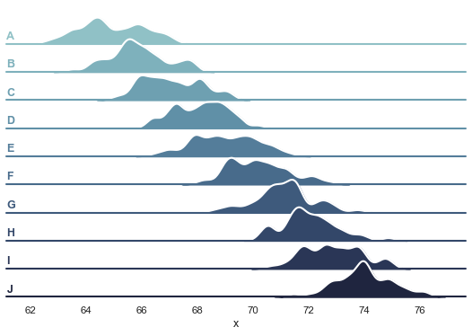

Overlapping densities (‘ridge plot’)¶
seaborn components used: set_theme(), cubehelix_palette(), FacetGrid
import numpy as np
import pandas as pd
import seaborn as sns
import matplotlib.pyplot as plt
sns.set_theme(style="white", rc={"axes.facecolor": (0, 0, 0, 0)})
# Create the data
rs = np.random.RandomState(1979)
x = rs.randn(500)
g = np.tile(list("ABCDEFGHIJ"), 50)
df = pd.DataFrame(dict(x=x, g=g))
m = df.g.map(ord)
df["x"] += m
# Initialize the FacetGrid object
pal = sns.cubehelix_palette(10, rot=-.25, light=.7)
g = sns.FacetGrid(df, row="g", hue="g", aspect=15, height=.5, palette=pal)
# Draw the densities in a few steps
g.map(sns.kdeplot, "x",
bw_adjust=.5, clip_on=False,
fill=True, alpha=1, linewidth=1.5)
g.map(sns.kdeplot, "x", clip_on=False, color="w", lw=2, bw_adjust=.5)
g.map(plt.axhline, y=0, lw=2, clip_on=False)
# Define and use a simple function to label the plot in axes coordinates
def label(x, color, label):
ax = plt.gca()
ax.text(0, .2, label, fontweight="bold", color=color,
ha="left", va="center", transform=ax.transAxes)
g.map(label, "x")
# Set the subplots to overlap
g.fig.subplots_adjust(hspace=-.25)
# Remove axes details that don't play well with overlap
g.set_titles("")
g.set(yticks=[])
g.despine(bottom=True, left=True)